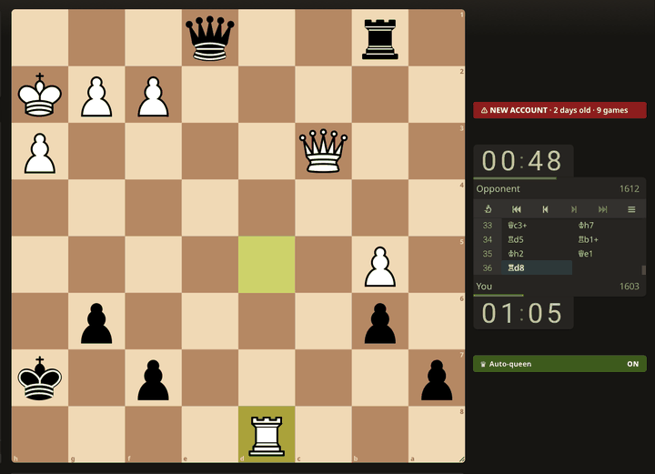
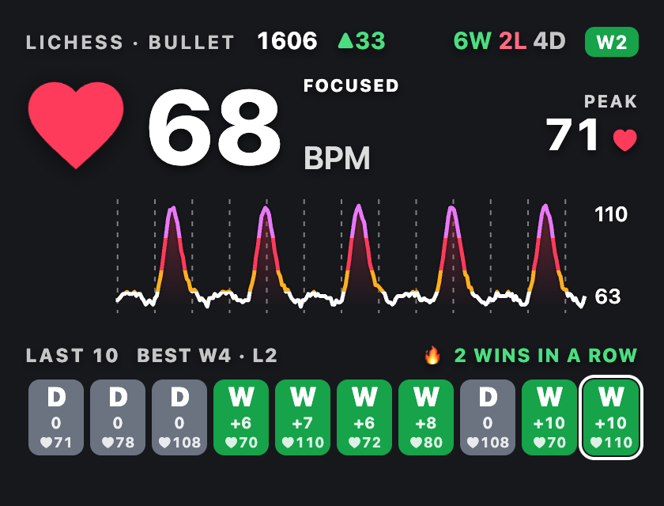
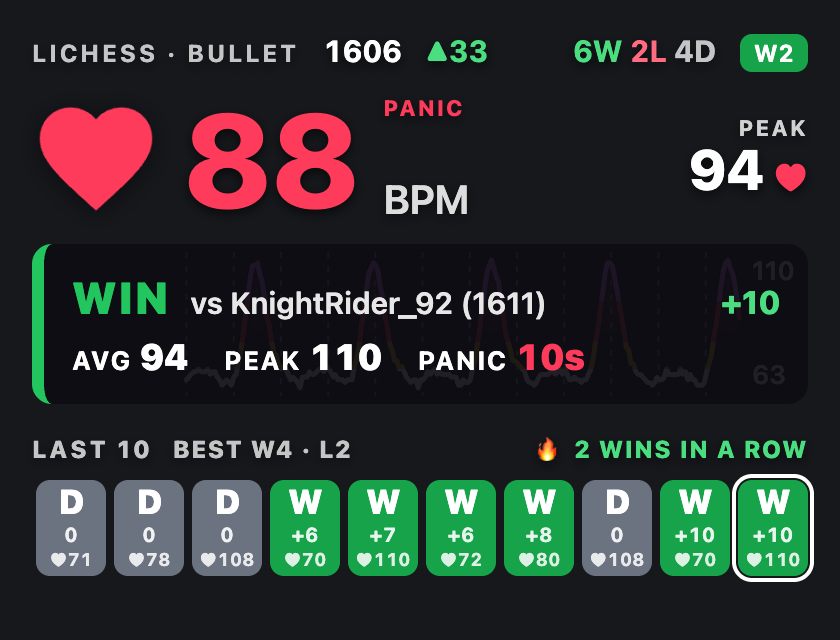

Lichess Desk
A Mac app for lichess.org, made for streaming. Apple Silicon and Intel, macOS 13.3 or later.

Sped up and staged: the last minute of your clock.
- Board tint as your clock runs down. Yellow, amber, then a soft coral that gently pulses in the last seconds, so you and your viewers feel the time pressure.
- Smurf warning. Your opponent's account age and game count sit above their clock, flashing red for brand-new accounts, so you can abort in time.
- Auto-queen with an on/off button under your clock. Hold ⌥ to pick another piece.
- The full desktop site: arrows, premoves, keyboard moves, and you stay logged in.
- Heart rate built in. Connects to your watch over Bluetooth, shows your BPM next to your clock, and serves the heart-rate overlay for OBS.
- OBS-friendly: a fixed window title and size presets (720p, 900p, 1080p), so Window Capture never needs redoing.
# needs Homebrew: https://brew.sh
brew tap tdiethe/tap
brew trust tdiethe/tap
brew install --cask lichess-desk
Signed and notarised by Apple. Update later with brew upgrade --cask lichess-desk. Not affiliated with lichess.org.
Heart-rate overlay
Your live heart rate on stream, next to a scoreboard of today's games. Built into Lichess Desk; a small script covers chess.com and browsers.


- Big BPM coloured by your own zones, with a flash on sudden spikes and a peak for each game.
- Five-minute trace with a marker at the start of each game.
- Session scoreboard: rating change, wins, losses, draws and streak.
- Last 10 games as tiles with result, rating change and peak heart rate.
- Post-game card: average, peak and seconds spent in the panic zone.
In Lichess Desk · lichess
- Turn on Broadcast Heart Rate on your watch.
- Choose Heart Rate → Heart Rate On (⌘⇧B) and allow Bluetooth.
- In OBS, add a Browser Source at
http://127.0.0.1:8765/, 420 × 320.
Your games are followed automatically. Pick a specific watch under Heart Rate → Watch; Demo Heart Rate lets you set up OBS without one.
Python bridge · chess.com or a browser
# needs uv: https://docs.astral.sh/uv/ uv run hr-overlay/hr_overlay.py --name fenix --chesscom <you> uv run hr-overlay/hr_overlay.py --demo # try it without a watch
Same OBS URL. Use --lichess <you> for lichess in a browser. Quit the bridge before turning heart rate on in Lichess Desk: both use port 8765.
Browser userscripts
Prefer playing in your browser? The same features as Tampermonkey scripts.
Clock board tint
Board tint and optional auto-queen on lichess and chess.com, plus the opponent account-age warning on lichess.
Install scriptAuto-queen toggle
Just auto-queen, toggled with Alt+Q. Hold Shift to choose another piece.
Install script